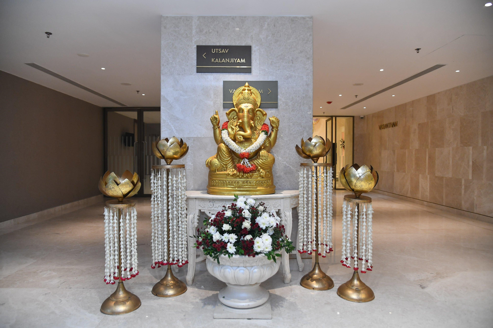

The manavarai is the sacred canopy under which the most important rituals of a South Indian wedding take place. Here are ten stunning ideas that blend tradition with modern elegance.
The timeless combination of banana stems, mango leaves, and fresh jasmine garlands remains the gold standard. This traditional setup evokes the temple atmosphere and connects the ceremony to its spiritual roots.
Drawing inspiration from South Indian temple gopurams, this design features a tiered canopy structure adorned with marigolds, roses, and traditional hanging garlands cascading down the pillars.
For couples who love tradition but want a modern twist, a contemporary floral manavarai uses orchids and hydrangeas alongside classic jasmine, creating a fresh and sophisticated look.
A pristine white floral manavarai with gold accents creates a regal atmosphere. White roses, tuberoses, and carnations paired with gold-painted banana stems and brass oil lamps.
Using raw coconut leaves, dried palm fronds, and wildflowers, this eco-friendly approach creates a charming rustic manavarai that feels authentic and connected to nature.
Soft pastel flowers creating a dreamy canopy overhead "” blush pink roses, lavender, and white chrysanthemums draped in flowing fabric panels.
Elevate the traditional manavarai with hanging crystal chandeliers and cascading flower chains. The play of light through crystals creates a magical atmosphere.
A minimalist manavarai with carefully curated focal points "” a single statement floral arrangement, clean banana stems, and selective lighting "” can be incredibly impactful.
Incorporating tropical elements like birds of paradise, anthuriums, and monstera leaves alongside traditional banana stems creates an unexpected yet beautiful fusion.
Traditional brass vessels, lamps, and decorative elements paired with abundant fresh flowers and mango leaf torana create an authentic heritage look.
The right manavarai decoration depends on your venue, budget, and personal style. At VKS Garland and Decorations, we work closely with each family to create a manavarai that feels both sacred and stunning.